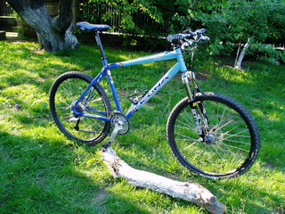
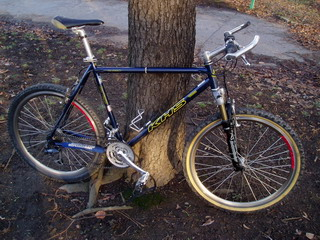

Cesty na kole — vybavení
Kona Kula (jaro 2004 - ???) |
KHS Nomad (podzim 1999 - jaro 2004) |
|
|  |  | |
| Velikost rámu | 20" | 21" |
| Rám | Easton Ultralite Bi-Oval | AVR True temper cr-mo d.b. |
| Vidlice | Marzocchi MX Comp w/ ETA 100mm | Marzocchi Bomber Z5 Air 80mm |
| Hlavové složení | Aheadset STS with spacers | Tioga |
| Kliky | RaceFace Evolve XC ISIS | tracer |
| Převodníky | 44/32/22 | |
| Střdové složení | TruVativ BB03GSPL ISIS | |
| Pedály | Shimano PD-M505 | |
| Řetěz | Shimano CN-HG73 | |
| Kazeta | Shimano Deore CS-HG-50-9 | Shimano CN HG-50 |
| Přesmykač | Shimano LX FD-M570 | Shimano STX |
| Přehazovačka | Shimano XT RD- M750 | Shimano LX |
| Řazení | Shimano LX SL-M570 (dvojpáčky 3x9) | SACHS Power Grip Wavey (otočné 3x8) |
| Řidítka | Easton EA30 Flatbar | |
| Představec | Easton EA 50 stem | |
| Gripy | Bontrager Ergo | |
| Brzdy | Hayes Hydraulic HFX-9 XC | Power tools V-brzdy / špalky KOOL-STOP červené |
| Přední nába | New Shimano Disc Hub HB-525 | Shimano Alivio |
| Zadní nába | New Shimano Disc Hub FH-525 | Shimano STX RC |
| Paprsky | Stainless 15g fr/14g rr | |
| Pláště | Maxxis Ignitor 2,1" | Hutchinson 26" x 1.95 |
| Ráfek přední | Mavic X117 Disc black | Rigida DP 22 |
| Ráfek zadní | Mavic X321 Disc black | Rigida DP 22 |
| Sedlo | SDG-Kona Satellite | Power tools, po stranách s kevlarem |
| Sedlovka | PELLS X-RACE XR1 27,2 x 400 mm | |
| Upínák sedla | Kona Clamp | |
| Barva | Double Blue | modrá |
| Váha | 10,9 Kg |